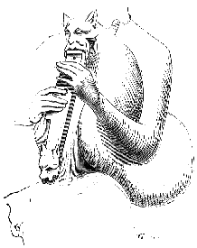
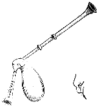
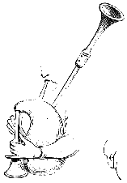

Eugène VIOLLET le DUC
Dictionnaire raisonné du mobilier.CORNEMUSE, s. f. (muse, musette, chevrette, turluele). Le mot cornemuse n'est pas très ancien, on ne le trouve pas employé avant le XIVe siècle. Le mot latin cornemusa se lit dans une pièce de 13571.
 Figure 1 Dans l'article CHEVRETTE, un vers cité de Guillaume de Machaut distingue la cornemuse de la chevrette. Les cornemuses figurées dans les manuscrits et les sculptures antérieurement au XIVe siècle ne sont que des grosses chevrettes composées d'une peau de bouc, d'une pipe et d'une grande flûte avec anche. La jolie statue du cornemuseur qui décore la façade de la maison des Musiciens à Reims nous montre un de ces instruments tels qu'ils étaient usités au XIIIe siècle2. Ce n'est qu'une grosse chevrette, garnie d'une pipe et d'une flûte plate percée de trous (fig. 1). La flûte, terminée par une tête d'animal en guise de pavillon, s'emmanche dans une autre tête de bête attachée au col de la peau de bouc. Le corps de la flûte possède un renfort du côté de la main droite, dont nous ne comprenons pas l'usage. Dans cette chevrette, le bourdon n'existe pas encore, non plus que le petit bourdon. Dans un manuscrit du XIVe siècles3, nous voyons déjà cependant une cornemuse garnie du bourdon (fig. 2) ; sa flûte est percée de sept trous. Un autre manuscrit du commencement du XVe siècle4 reproduit également une cornemuse avec son bourdon parfaitement caractérisé, posé sur l'épaule du joueur (fig. 3). Mais la flûte est unique et la cornemuse ne possède pas le petit bourdon qui fait entendre la dominante dans les cornemuses modernes. Toutefois cette flûte est beaucoup plus longue que ne l'est le chalumeau actuel, lequel est petit et n'est percé que de trois trous5.
|
 Figure 2 |
 Figure 3 |
Il est possible que le nom de cornemuse n'ait été donné à la musette ou muse qu'après l'adjonction du bourdon, qui n'est qu'un cornet. Dans le Dict. des rues de Paris, qui date du XIVe siècle, on, lit ces vers.
Ce passage concordant, comme date, avec la figure 2, permettrait de supposer qu'on donna, au XIVe siècle, le nom de muse-corne aux musettes garnies du bourdon.
Notes :
(1) Voyez du Cange, Gloss., CORNEMUSA.
(2) La construction de la maison des Musiciens de Reims date du milieu du XIIIe siècle.
(3) De 1320 environ : Lancelot du Lac, 2e vol., Biblioth. impér.
(4) De 1430 environ, Biblioth. impér., latin no 873.
(5) Dans la cornemuse moderne, le bourdon fait la basse continue, le petit bourdon donne la dominante, et le chalumeau sert à moduler les airs.